승강기기사 (2022-04-24 기출문제)
1과목: 승강기 개론
1. 기계실의 조명장치와 관련하여 다음 항목에 대한 조도 기준을 올바르게 나타낸 것은?
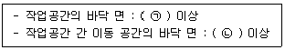
- ㉠ : 150 lx, ㉡ : 100 lx
- ㉠ : 150 lx, ㉡ : 50 lx
- ㉠ : 200 lx, ㉡ : 100 lx
- ㉠ : 200 lx, ㉡ : 50 lx
(정답률: 알수없음)

2. 유압식 엘리베이터는 제약조건이 많아서 수요가 줄어들고 있는 추세인데, 다음 중 유압식 엘리베이터가 주로 이용되는 장소의 조건으로 거리가 먼 것은?
- 저층의 맨션에서 시가지 때문에 일광 제한과 사선 제한의 규제가 있을 경우
- 중심상가에 위치한 10층 상당의 업무용 빌딩에 엘리베이터를 설치할 경우
- 공원 등에서 건물을 세울 시 높이 제한이 엄격한 경우
- 대용량이고 승강 행정이 짧은 화물용 엘리베이터로 이용될 경우
(정답률: 알수없음)
3. 엘리베이터의 상승과속방지장치에 대한 설명으로 옳지 않은 것은?
- 상승과속방지장치는 빈 카의 감속도가 정지단계 동안 1 gn(중력가속도)를 초과하는 것을 허용하지 않아야 한다.
- 상승과속방지장치의 복귀를 위해서 승강로에 접근을 요구하지 않아야 한다.
- 상승과속방지장치를 작동하기 위해 외부에너지가 필요한 경우, 에너지가 없으면 엘리베이터는 정지되어야 하고 정지 상태가 유지되어야 한다.(단, 압축스프링 방식은 제외)
- 카의 상승과속을 감지하여 카를 정지시키거나 카가 카의 완충기에 충돌할 경우에 대해 설계된 속도로 감속시켜야 한다.
(정답률: 알수없음)
4. 다음 중 카를 지지하는 카 프레임(또는 카틀, car frame)의 주요 구성요소가 아닌 것은?
- 상부틀(또는 상부체대, cross head)
- 카 바닥(car platform)
- 하부틀(또는 하부체대, flank)
- 브레이스 로드(brace road)
(정답률: 알수없음)
5. 승강기 안전관리법령에 따라 승강기의 정격속도에 따라서 고속 승강기와 중저속 승강기로 구분하는데 이를 구분하는 정격속도의 크기는?
- 3.5 m/s
- 4 m/s
- 4.5 m/s
- 5 m/s
(정답률: 알수없음)
6. 주로 1대의 엘리베이터를 운행할 경우 적용되는 방식으로 승강장의 누름 버튼을 상승용, 하강용의 양쪽 모두 동작이 가능한 방식이며, 상승 또는 하강으로의 진행방향에 승객이 합승을 원할 경우 합승 호출에 응답하면서 운전하는 방식은?
- 단식자동식
- 하강 승합 전자동식
- 승합 전자동식
- 홀 랜턴 방식
(정답률: 알수없음)
7. 적절한 권상능력 또는 전동기의 동력을 확보하기 위해 매다는 로프의 무게에 대한 보상수단을 적용해야 하는데, 이러한 보상수단 중 하나인 튀어오름 방지장치를 설치해야 하는 엘리베이터 정격속도의 기준은?
- 1.75 m/s를 초과한 경우
- 2.5 m/s를 초과한 경우
- 3.0 m/s를 초과한 경우
- 3.5 m/s를 초과한 경우
(정답률: 알수없음)
8. 카 자중 3500kg, 정격하중 2000kg, 승강행정 60m, 로프 6본, 균형추의 오버밸런스율이 40% 일 때 전부하시 카가 최상층에 있는 경우 트랙션비(권상비)는 약 얼마인가? (단, 로프는 1.2 kg/m 이고, 보상율이 90%가 되는 균형 체인을 설치한다.)
- 1.18
- 1.22
- 1.27
- 1.36
(정답률: 알수없음)
9. 다음 로프 흠에 대한 설명으로 가장 옳지 않은 것은?
- V흠 – 가공이 쉽고 초기 마찰력도 우수하다.
- 포지티브 흠(나선형 흠) - 로프를 권동에 감기 때문에 고양정으로 사용하기에 유리하다.
- 언더컷 형 – 트랙션 능력이 커서 가장 많이 사용된다.
- U흠 – 로프와의 면압이 적으므로 로프의 수명이 길어진다.
(정답률: 알수없음)
10. 유압식 엘리베이터에서 한쪽 방향으로만 기름이 흐르도록 하는 밸브로서 상승 방향에는 흐르지만 약방향으로는 흐르지 않게 하는 밸브는?
- 체크 밸브
- 스톱 밸브
- 바이패스 밸브
- 상승용 유량제어 밸브
(정답률: 알수없음)
11. 엘리베이터 제어방식 중 카의 실속도와 지령속도를 비교하여 사이리스터 점호각을 바꿔 유도전동기의 속도를 제어하는 방식은?
- 교류1단 속도제어
- 교류2단 속도제어
- 교류귀환제어
- 가변전압 가변주파수 제어
(정답률: 알수없음)
12. 에스컬레이터에 진입방지대가 설치되는 경우 그 설치요건에 관한 설명 중 옳지 않은 것은?
- 진입방지대는 입구에만 설치해야 하며, 자유구역에서는 출구에 설치할 수 없다.
- 뉴얼의 끝과 진입방지대 및 진입방지대와 진입방지대 사이의 자유로운 입구 폭은 500mm 이상이어야 하며, 사용되는 쇼핑 카트 또는 수하물 카트 유형의 폭보다 작아야 한다.
- 진입방지대는 승강장 플레이트에 고정하는 것도 허용되지만, 가급적이면 건물 구조물에 고정되어야 한다.
- 진입방지대의 높이는 700mm에서 900mm 사이이어야 한다.
(정답률: 알수없음)
13. 권동식(확동구동식)과 비교하여 트랙션식(마찰구동식) 권상기의 특징에 대한 설명으로 옳지 않은 것은?
- 주 로프의 미끄러짐이나 주 로프 및 도르래에 마모가 거의 일어나지 않는다.
- 균형추를 사용하기 때문에 소요 동력이 작아진다.
- 와이어로프의 안전율이 확보되면 승강 행정에는 제한이 없다.
- 여러 가지 장점이 있어 저속에서 초고속까지 넓게 사용되고 있다.
(정답률: 알수없음)
14. 하나의 승강로에 2대 이상의 엘리베이터가 있는 경우 카 벽에 비상구출문을 설치할 수 있다. 이 때 카 간의 수평거리는 몇 m를 초과하면 안되는가?
- 0.8m
- 1.0m
- 1.2m
- 1.5m
(정답률: 알수없음)
15. 경사형 엘리베이터 안전기준에 따라 승강로 벽을 설계할 때 승강로 벽의 높이 기준은 경사 각도에 따라 달라지는데, 그 기준의 경계가 되는 경사각도는 약 몇 ° 인가?
- 35°
- 40°
- 45°
- 50°
(정답률: 알수없음)
16. 승강기의 정격속도에 관계없이 사용할 수 있는 완충기로 옳은 것은?
- 스프링 완충기
- 유압 완충기
- 우레탄 완충기
- 고무 완충기
(정답률: 알수없음)
17. 에스컬레이터의 공칭속도에 대한 기준이다. 괄호 안의 내용이 옳게 짝지어진 것은?
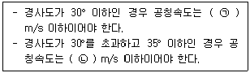
- ㉠ : 0.6, ㉡ : 0.4
- ㉠ : 0.6, ㉡ : 0.5
- ㉠ : 0.75, ㉡ : 0.4
- ㉠ : 0.75, ㉡ : 0.5
(정답률: 알수없음)
18. 권상식 엘리베이터에서 주 로프의 미끄러짐 현상을 줄이는 방법으로 옳지 않은 것은?
- 권부각을 크게 한다.
- 속도 변화율을 크게 한다.
- 균형체인이나 균형로프를 설치한다.
- 로프와 도르래 사이의 마찰계수를 크게 한다.
(정답률: 알수없음)
19. 엘리베이터 도어를 작동시키는 도어머신(door machine) 장치가 갖추어야 할 조건으로 가장 거리가 먼 것은?
- 도어용 모터는 토크기 크고 열이 많이 발생하므로 별도의 냉각시설이 필요하다.
- 동작회수가 승강기 기동빈도의 2배 정도이기 때문에 유지보수가 용이해야 한다.
- 주로 엘리베이터 상단에 설치되어 있어서 소형이면서 경량일수록 좋다.
- 도어 작동에 있어서 동작이 원활하고 소음이 적어야 한다.
(정답률: 알수없음)
20. 엘리베이터 안전기준에 따라 소방구조용 엘리베이터의 기본요건으로 틀린 것은?
- 소방구조용 엘리베이터 출입구의 유효폭은 0.7m 이상으로 한다.
- 소방구조용 엘리베이터는 소방운전 시 모든 승강장의 출입구마다 정지할 수 있어야 한다.
- 소방구조용 엘리베이터는 소방관 접근 지정층에서 소방관이 조작하여 엘리베이터 문이 닫힌 이후부터 60초 이내에 가장 먼 층에 도착하여야 한다.
- 소방구조용 엘리베이터의 운행속도는 1m/s 이상이어야 한다.
(정답률: 알수없음)
2과목: 승강기 설계
21. 정격속도 90m/min 인 엘리베이터 에너지분산형 완충기에 필요한 최소 행정거리는 약 몇 mm 인가?
- 121
- 152
- 184
- 213
(정답률: 알수없음)
22. 카 추락방지안전장치가 작동될 때, 무부하 상태의 카 바닥 또는 정격하중이 균일하게 분포된 부하 상태의 카 바닥은 정상적인 위치에서 몇 %를 초과하여 기울어지지 않아야 하는가?
- 3
- 4
- 5
- 6
(정답률: 알수없음)
23. 엘리베이터 설비계획과 관련한 설명으로 옳지 않은 것은?
- 교통량 계산의 결과 해당 건물의 교통 수요에 적합한 충분한 대수를 설치한다.
- 엘리베이터를 기다리는 공간은 복도의 통로가 아닌 별도의 공간으로 구성한다.
- 초고층 빌딩의 경우 서비스 층을 분할하는 것을 검토한다.
- 여러 대를 설치할 경우 이용자의 접근을 쉽게 하기 위해 가능한 분산 배치한다.
(정답률: 알수없음)
24. 비상통화장치에 대한 설명으로 옳지 않은 것은?
- 기계실 또는 비상구출운전을 위한 장소에는 카내와 통화할 수 있도록 규정된 비상전원 공급장치에 의해 전원을 공급받는 내부통화 시스템 또는 유사한 장치가 설치되어야 한다.
- 비상 시 안정적으로 이용자 상황을 전달할 수 있는 단방향 음성통신이어야 한다.
- 카 내에 갇힌 이용자 등이 외부와 통화할 수 있는 비상통화장치가 엘리베이터가 있는 건축물이나 고정된 시설물의 관리 인력이 상주하는 장소에 2곳 이상에 설치되어야 한다.(단, 관리 인력이 상주하는 장소가 2곳 미만인 경우에는 1곳에만 설치될 수 있다.)
- 비상통화장치는 비상통화 버튼을 한 번만 눌러도 작동되어야 하며, 비상통화가 연결되면 녹색 표시의 등이 점등되어야 한다.
(정답률: 알수없음)
25. 점차 작동형 추락방지안전장치를 사용하는 엘리베이터의 정격속도가 150m/min 일 때 다음 중 과속조절기가 작동해야 하는 엘리베이터의 속도로 적절한 것은?
- 155m/min
- 165m/min
- 190m/min
- 210m/min
(정답률: 알수없음)
26. 전동기의 공칭회로 전압이 380V일 때 시험전압 500V 기준으로 절연 저항은 몇 MΩ 이상이어야 하는가?
- 0.3
- 0.5
- 1.0
- 1.5
(정답률: 알수없음)
27. 엘리베이터용 전동기의 토크는 전동기의 속도가 증가함에 따라 차차 커지다가 최대 토크에 도달하면 그 이후 급격히 토크가 작아져 동기속도가 0이 된다. 이 과정에서 발생한 최대 토크를 무엇이라고 하는가?
- 풀업토크
- 전부하토크
- 정동토크
- 기동토크
(정답률: 알수없음)
28. 엘리베이터에서 카의 자중 및 카에 의해 지지되는 부품의 중량은 1850kg, 정격하중은 1500kg이다. 전 부하 상태의 카가 완충기에 작용하였을 때 피트 바닥에 지지해야 하는 전체 수직력의 최소값은 약 몇 kN 인가?
- 107
- 114
- 126
- 131
(정답률: 알수없음)
29. 감아 걸기 전동장치에 대한 설명 중 틀린 것은?
- 평벨트를 사용하는 원통형 풀리는 벨트의 벗어짐을 방지하기 위하여 가운데 부분을 약간 오목하게 한다.
- V-벨트를 이용하면 평벨트를 이용하는 경우보다 비교적 소형으로 큰 동력을 전달할 수 있다.
- 로프 풀리의 지름을 2배로 키우면 로프에 발생하는 굽힘응력은 1/2로 감소한다.
- 체인과 스프로킷을 이용하면 벨트를 이용한 전동장치보다 정확한 속도비로 동력을 전달할 수 있다.
(정답률: 알수없음)
30. 자세 유형에 따른 피트 피난공간 크기의 최소 기준에 대한 설명 중 틀린 것은? (단, 주택용 엘리베이터는 제외한다.)
- 서있는 자세의 수평거리는 0.3m×0.4m 이다.
- 웅크린 자세의 수평거리는 0.5m×0.7m 이다.
- 서있는 자세의 높이는 2m 이다.
- 웅크린 자세의 높이는 1m 이다.
(정답률: 알수없음)
31. 기어 전동의 특징을 벨트 및 로프 전동과 비교한 설명으로 옳은 것은?
- 효율이 낮다.
- 큰 감속비를 얻기 어렵다.
- 소음과 진동이 큰 편이다.
- 동력전달이 불확실하다.
(정답률: 알수없음)
32. 엘리베이터용 전동기를 선정할 때 고려해야 할 조건으로 옳지 않은 것은?
- 회전부분의 관성모멘트가 커야 한다.
- 기동 토크가 커야 한다.
- 기동 전류가 작은 편이 좋다.
- 온도 상승에 대해 충분히 견디어야 한다.
(정답률: 알수없음)
33. 그림과 같은 가이드레일에서 x방향 수평하중(Fx)이 12kN 작용할 때 x방향 처짐량은 약 몇 mm 인가? (단, 가이드 브래킷 사이 최대 거리는 250cm 이고, y축 단면 2차 모멘트는 26.48cm4 이며, 재료의 세로탄성계수는 210 GPa 이다. 그리고, 건물 구조의 처짐량은 무시하고, 처짐 공식은 엘리베이터 안전기준에 따른다.)
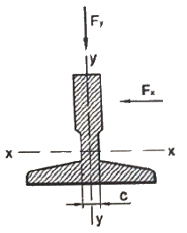
- 34.3
- 37.6
- 43.5
- 49.2
(정답률: 알수없음)
34. 카 내부에 있는 사람에 의한 카문의 개방을 제한하기 위해 카가 운행 중일 때, 카문의 개방은 몇 N 이상의 힘이 요구되어야 하는가? (단, 잠금해제구간 밖에 있을 때는 제외한다.)
- 30 N
- 50 N
- 150 N
- 300 N
(정답률: 알수없음)
35. 엘리베이터 안전기준에 따라 기계실의 크기 및 치수의 기준에 관한 설명으로 옳은 것은?
- 작업구역의 유효 높이는 4m 이상이어야 한다.
- 작업구역 간 이동통로의 유효 폭은 0.3m 이상이어야 한다.
- 기계실 바닥에 0.3m를 초과하는 단차가 있는 경우, 고정된 사다리 또는 보호난간이 있는 계단이나 발판이 있어야 한다.
- 보호되지 않은 회전부품 위로 0.3m 이상의 유효 수직거리가 있어야 한다.
(정답률: 알수없음)
36. 엘리베이터에 사용되는 로프의 공칭지름이 18mm일 때 풀리의 피치원 지름은 몇 mm 이상이어야 하는가? (단, 해당 건물은 상업용 건물이다.)
- 540mm
- 720mm
- 1080mm
- 1440mm
(정답률: 알수없음)
37. 트랙션비(Traction ratio)에 대한 설명으로 틀린 것은?
- 트랙션비의 값이 낮아질수록 트랙션 능력은 좋아진다.
- 트랙션비의 값이 커질수록 전동기의 출력은 낮아질 수 있다.
- 카측 로프가 매달고 있는 중량과 균형추측 로프가 매달고 있는 중량의 비를 말한다.
- 트랙션비의 계산 시는 적재하중, 카 자중, 로프 중량, 오버밸런스율 등을 고려하여야 한다.
(정답률: 알수없음)
38. 카 문턱에 설치하는 에이프런의 수직 높이 기준에 관한 표이다. ㉠, ㉡에 들어갈 기준으로 옳은 것은?
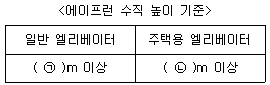
- ㉠ : 0.55, ㉡ : 0.40
- ㉠ : 0.65, ㉡ : 0.44
- ㉠ : 0.75, ㉡ : 0.54
- ㉠ : 0.85, ㉡ : 0.60
(정답률: 알수없음)
39. 에스컬레이터를 배치할 경우 고려할 사항 중 틀린 것은?
- 바닥 점유 면적은 되도록 크게 배치한다.
- 건물의 정면 출입구와 엘리베이터 설치 위치와의 중간이 좋다.
- 백화점일 경우에는 가장 눈에 띄기 쉬운 위치가 좋다.
- 사람의 움직임이 많은 곳에 설치되어야 한다.
(정답률: 알수없음)
40. 60Hz, 4극 전동기의 슬립이 5% 인 경우 전부하 회전수는 약 몇 rpm 인가?
- 1710
- 1890
- 3420
- 3780
(정답률: 알수없음)
3과목: 일반기계공학
41. 일반적으로 단면이 각형이며 스터핑 박스에 채워 넣어 사용되어지는 패킹의 총칭은?
- 브레이드 패킹
- 코튼 패킹
- 금속박 패킹
- 글랜드 패킹
(정답률: 알수없음)
42. 드릴링 머신에서 너트나 볼트의 머리와 접촉하는 면을 평면으로 파는 작업은?
- 리밍
- 보링
- 태핑
- 스폿 페이싱
(정답률: 알수없음)
43. 두 축이 만나지도 않고, 평행하지도 않는 기어는?
- 윔과 윔 기어
- 베벨 기어
- 헬리컬 기어
- 스퍼 기어
(정답률: 알수없음)
44. 알루미늄 합금인 두랄루민의 표준성분에 해당하지 않는 원소는?
- Co
- Cu
- Mg
- Mn
(정답률: 알수없음)
45. 하중을 물체에 작용하는 상태에 따라 분류할 때 해당하지 않는 것은?
- 인장하중
- 압축하중
- 전단하중
- 교번하중
(정답률: 알수없음)
46. 정밀 주조법의 일종으로 정밀한 금형에 용융금속을 고압, 고속으로 주입하여 주물을 얻는 방법으로 Al 합금, Mg 합금 등에 주로 사용되는 주조법은?
- 원심주조법
- 다이캐스팅
- 셀 몰드법
- 연속주조법
(정답률: 알수없음)
47. 철강 시험편을 오스테나이트화한 후 시험편의 한 쪽 끝에 물을 분사하여 퀜칭하는 표준시험법은?
- 붕화
- 복탄
- 조미니
- 마르에이징
(정답률: 알수없음)
48. 그림과 같이 용접이음을 하였을 때 굽힘응력을 계산하는 식으로 옳은 것은? (단, L : 용접 길이, t : 용접치수(용접판 두께), ℓ : 용접부에서 하중 작용선까지 거리, W : 작용하중이다.)
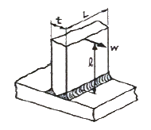
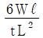
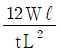
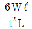
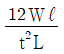
(정답률: 알수없음)
49. 호칭 지름이 50mm, 피치가 2mm인 미터 가는 나사가 2줄 왼나사로 암나사 등급이 6일 때 KS 나사 표시방법으로 옳은 것은?
- 왼 2줄 M50×2-6g
- 왼 2줄 M50×2-6H
- 2줄 M50×2-6g
- 2줄 M50×2-6H
(정답률: 알수없음)
50. 코일의 유효권수 12, 코일의 평균지름 40mm, 소선의 지름 6mm인 압축 코일 스프링에 30N의 외력이 작용할 때, 변위(mm)는 약 얼마인가? (단, 코일 스프링 재질의 전단탄성계수는 8×103N/mm2 이다.)
- 9.35
- 17.78
- 22.70
- 33.46
(정답률: 알수없음)
51. 리벳이음에서 리벳의 지름이 d, 피치가 p 일 때 판 효율을 구하는 식으로 옳은 것은?
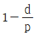
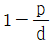
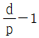
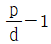
(정답률: 알수없음)
52. 다음 중 나사산을 가공하는데 적합한 가공법은?
- 전조
- 압출
- 인발
- 압연
(정답률: 알수없음)
53. 유압기기 요소에서 길이가 단면 치수에 비해서 비교적 긴 죔구를 의미하는 용어는?
- 램
- 초크
- 오리피스
- 스풀
(정답률: 알수없음)
54. 그림과 같은 균일분포하중이 작용하는 보의 최대 처짐량을 구하는 식으로 옳은 것은? (단, W : 균일분포하중, L : 보의 길이, E : 세로탄성계수, I : 단면 2차 모멘트이다.)
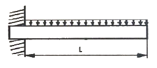
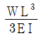
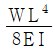
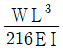
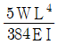
(정답률: 알수없음)
55. 지름이 100mm인 유압 실린더의 이론 송출량이 830 cm3/s, 추력이 3kgf 일 때 이 유압실린더의 속도(cm/s)는 얼마인가? (단, 펌프의 용적효율은 90% 이다.)
- 7.5
- 8.5
- 9.5
- 10.5
(정답률: 알수없음)
56. 비틀림을 받는 원형 단면 봉에서 발생하는 비틀림 각에 대한 설명으로 옳은 것은?
- 봉의 길이에 반비례한다.
- 전단 탄성계수에 비례한다.
- 비틀림 모멘트에 반비례한다.
- 극단면 2차 모멘트에 반비례한다.
(정답률: 알수없음)
57. 축에 직각인 하중을 지지하는 베어링은?
- 피벗 베어링
- 칼라 베어링
- 레이디얼 베어링
- 스러스트 베어링
(정답률: 알수없음)
58. 다음 중 버니어 캘리퍼스로 측정할 수 없는 것은?
- 구멍의 내경
- 구멍의 깊이
- 축의 편심량
- 공작물의 두께
(정답률: 알수없음)
59. 지름 8cm, 길이 200cm인 연강봉에 7000N 인장하중이 작용하였을 때 변형량은? (단, 탄성한도 내에서 있다고 가정하며, 세로탄성계수는 2.1×106 N/cm2 이다.)
- 0.13mm
- 0.52mm
- 0.33mm
- 0.62mm
(정답률: 알수없음)
60. 유압 회로 구성에 사용되는 어큐뮬레이터의 용도가 아닌 것은?
- 주 동력원
- 비상동력원
- 누설 보상기
- 유압 완충기
(정답률: 알수없음)
4과목: 전기제어공학
61. 어느 코일에 흐르는 전류가 0.1초간에 1A 변화하여 6V의 기전력이 발생하였다. 이 코일의 자기 인덕턴스는 몇 H 인가?
- 0.1
- 0.6
- 1.0
- 1.2
(정답률: 알수없음)
62. 어떤 장치에 원료를 넣어 이것을 물리적, 화학적 처리를 가하여 원하는 제품을 만들기 위해 사용하는 제어는?
- 서보제어
- 추치제어
- 프로그램제어
- 프로세스제어
(정답률: 알수없음)
63. 논리식
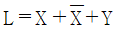
를 부울대수의 정리를 이용하여 간단히 하면?- Y
- 1
- 0
- X + Y
(정답률: 알수없음)
64. 전동기의 기계방정식이
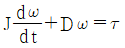
일 때, 이 식으로 그린 블록선도는? (단, J는 관성계수, D는 마찰계수, τ는 전동기에서 발생되는 토크, ω는 전동기의 회전속도이다.)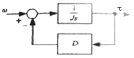
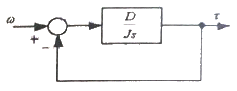
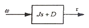
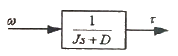
(정답률: 알수없음)
65.
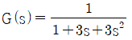
일 때 이 요소의 단위 계단 응답의 특성은?- 감쇠 진동(부족제동)
- 완전 진동(무제동)
- 임계 진동(임계제동)
- 비진동(과제동)
(정답률: 알수없음)
66. 2kΩ의 저항에 25mA의 전류를 흘리는 데 필요한 전압(V)은?
- 50
- 100
- 160
- 200
(정답률: 알수없음)
67. 접점부분이 비활성 가스를 충전한 유리관 속에 봉입되어 있는 스위치 코일에 흐르는 전류로 고속 동작을 하는 입력기구는?
- 근접 스위치
- 광전 스위치
- 플로트레스 스위치
- 리드 스위치
(정답률: 알수없음)
68. 그림과 같은 블록선도에서 X3/X1를 구하면?
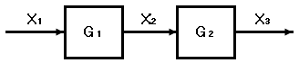
- G1 + G2
- G1 - G2
- G1 ⦁ G2
- G1 / G2
(정답률: 알수없음)
69. 입력으로 단위 계단함수 u(t)를 가했을 때, 출력이 그림과 같은 조절계의 기본 동작은?
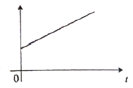
- 비례 동작
- 2위치 동작
- 비례 적분 동작
- 비례 미분 동작
(정답률: 알수없음)
70. 피드백 제어계의 제어장치에 속하지 않는 것은?
- 설정부
- 조절부
- 검출부
- 제어대상
(정답률: 알수없음)
71. 그림과 같은 미끄럼줄 브리지가 R = 10kΩ, X = 30kΩ에서 평형 되었다. L1과 L2의 합이 100cm 일 때 L1의 길이(cm)는?
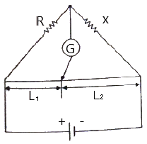
- 25
- 33
- 66
- 75
(정답률: 알수없음)
72.
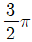
(rad)의 단위를 각도(°) 단위로 표시하면 얼마인가?- 120°
- 240°
- 270°
- 360°
(정답률: 알수없음)
73. 논리식
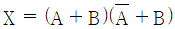
를 간단히 하면?- A
- B
- AB
- A + B
(정답률: 알수없음)
74. 변압깅의 열화방지를 위하여 콘서베이터를 설치하는데 기름이 직접 공기와 접촉하지 않도록 봉입하는 가스의 종류는?
- 헬륨
- 수소
- 유황
- 질소
(정답률: 알수없음)
75. 전동기 온도 상승 시험 중 반환 부하법에 해당되지 않는 것은?
- 블론델법
- 카프법
- 흡킨스법
- 등가저항측정법
(정답률: 알수없음)
76. 저항 R(Ω)에 전류 I(A)를 일정 시간 동안 흘렸을 때 도선에 발생하는 열량의 크기로 옳은 것은?
- 전류의 세기에 비례
- 전류의 세기에 반비례
- 전류의 세기의 제곱에 비례
- 전류의 세기의 제곱에 반비례
(정답률: 알수없음)
77. 그림과 같은 Y결선회로에서 X상에 걸리는 전압(V)은?
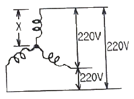
- 220/√3
- 220/3
- 110
- 220
(정답률: 알수없음)
78. 다음 그림과 같은 회로가 있다. 이때 각 콘덴서에 걸리는 전압(V)은 약 얼마인가?
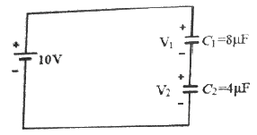
- V1 = 3.33, V2 = 6.67
- V1 = 6.67, V2 = 3.33
- V1 = 3.34, V2 = 1.66
- V1 = 1.66, V2 = 3.34
(정답률: 알수없음)
79. 그림은 3개의 전압계를 사용하여 교류측정이 가능한 회로이다. 이 회로에서 부하의 소비전력을 구하면?
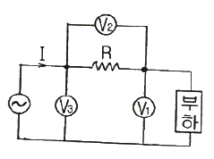
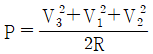
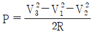
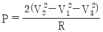
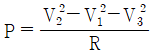
(정답률: 알수없음)
80. 3상 불평형 회로가 있다. 각상 전압이 Va = 220(V), Vb = 220∠-140°(V), Vc = 220∠100°(V) 일 때 정상분전압 V1은 약 몇 V 인가?
- 197.31∠13.06°
- 197.31∠-13.36°
- 217.03∠13.06°
- 217.03∠-13.36°
(정답률: 알수없음)